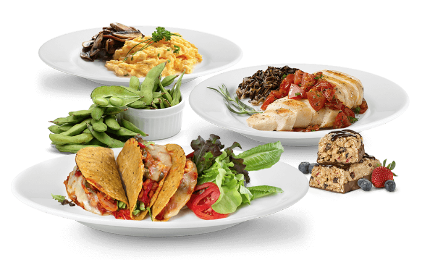
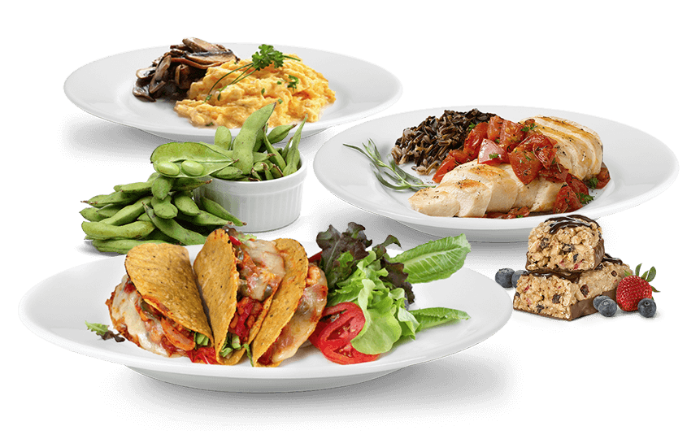

Donate edible food to feed the hungry
Zero Hunger links your food donations with local nonprofits catering for individuals who struggle to afford food.

Zero Hunger links your food donations with local nonprofits catering for individuals who struggle to afford food.
Let's build a world where nobody sleeps with an empty stomach
Smaller, easier-to-manage donations can get straight to where they’ll do the most good.
We help hungry people across Africa through food aid distribution.
Creates infinite exposure and bridges the gap between the NGO and the needy.
Streamlining a fairly disjointed donation process

We intercept potential food wastage and divert it towards people in need in Africa.
Happy Clients
Projects Completed
Dedicated Members
Awards Won

We make the platform simple and streamlined, while also collecting all the information food banks and agencies would need to decide whether or not a particular donation is viable, and what partner organization would be the best to go pick it up.
Get startedThe platform can automate the whole process, but donees can also jump in and override the suggestions from the algorithm. For each donor account, their donations live on a dashboard they can access to view past transactions. Oversee all incoming donations, and monitor how the food is being distributed out.

Get inspired by these stories.

I was impressed with its intentions, team and operations, and started donating. From supporting a few students initially, to supporting many more now, I intend to keep increasing my contribution with every successive year.
I used landify and created a landing page for my startup within a week. The Landify UI Kit is simple and highly intuitive, so anyone can use it.
I was totally satisfied, both with the method of disbursement and the target population. Instead of spending money on yearly rituals, I donate the amount. Money spent on God’s children should please the God anyway.
Download the app to manage your donations and keep track of the progress. Stay on track and complete on time! Accessible in both website and app form.
 
